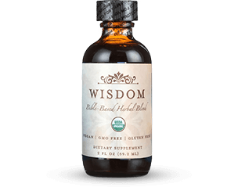
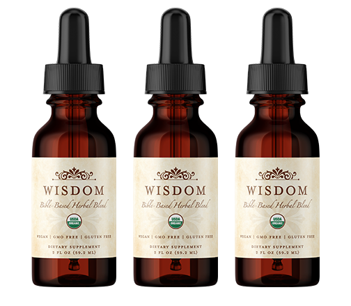
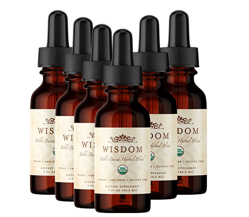
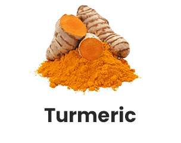
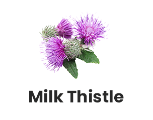

pull this our site visit
this is our main part of the site
this is our main part of the site
this is our main part of the site
Rediscover Health the Way God Intended
Rediscover Health the Way God Intended
Rediscover Health the Way God Intended
Rediscover Health the Way God Intended





Wisdom Helps with Pain
“Wisdom Formula works! I am crying with this miracle. My pain is so much better. My mind feels calm and happy too. Nothing works like this AMAZING Wisdom does, THANK GOD!!!!!”
Stacy L.
Wisdom Helps with Pain
“I am on my second bottle of Wisdom. It has truly helped my muscles, joints and boosted my energy level. I am moving around so much better. I also noticed an improvement in my night vision. I have purchased bottles for my daughter and two other friends and have told others about this product. i recently ordered a six month supply. Didn't want to be without it.”
-Roscella P.
Wisdom Helps with Gut and Digestion
“I take this 2 times a day for months. it is great for gut health less inflammation and gives a sense of calm. I feel invigorated more every day as if my body can absorb more health from my food, and has more stamina”
-Bren H.
Wisdom Helps with Gut and Digestion
“I take a dropper every single morning, I’m on my first bottle and overall I feel better, energetic and has help with my digestive system. Tastes great too.”
-Annie N.
Wisdom Helps with Sleep and Energy
“Wisdom improves my physical health and keeps me going without being tired. I'm on my 8 bottle, really amazing what GOD have created”
-Evelyn D.
Wisdom Helps with Sleep and Energy
“Started Wisdom almost two weeks ago and I can already feel an improved difference! This week I didn't have as much joint pain, my energy level has been off the charts for me. I've slept like a baby and feel rested and refreshed when I wake up. My insides just feel so healthy every time I take a dropper full, which is 2 x a day - AM/PM.
-Debra S.
Wisdom Helps with Vitality and Wellness
“From the very first application, I was totally impressed! This product brings clarity, calmness and a sense of well-being throughout the day and right into the evening. I place just a few drops under my tongue in the morning and again before bed. Thank you Jesus and Wisdom Nutrition!”
-Valerie R
Wisdom Helps with Vitality and Wellness
"So many healing properties in each one of those 8 natural/pure plant based ingredients you have in your product.....WISDOM indeed! I have experience more alertness and clarity during the day. Fatigue and soreness are gone! I'm almost 60 years old and I feel like I'm 20 again.....Oh, my skin looks more radiant and wrinkles are disappearing."
-Kathy T.
Wisdom Helps To Calm
"Within a couple days, I was feeling productive and less anxious again. My daughter noticed and asked how I was able, at age 69 to do so much. I suggested she try Wisdom also. She went through the exact same experience I did!
- Val A.
Wisdom Helps To Calm
“Tastes wonderful. My state of mind has been greatly improved. Suffer from anxiety and I HAVE NOT experienced anxiety since taking this supplement. Looking forward to continuing benefits to come.”
- Elizabeth G.
Dr Patrick Gentempo
"Wisdom is the world's most premium Bible-based daily supplement.designed to unleash your best self, providing you with natural nutrition, for peak energy and health."

37,000+ Families Blesssed
Wisdom Bible-based Herbal Blend
Wisdom — is a Bible-based herbal supplement that uses eight organic ingredients carefully chosen to support your health.
- 100% organic ingredients
- Tastes delicious
- Increase health and vitality
Choose Your Package
 Try-risk free with our 180-day
money-back guarantee.
Try-risk free with our 180-day
money-back guarantee.
Wisdom is proudly made in the USA,
and orders placed today will ship quick and easy